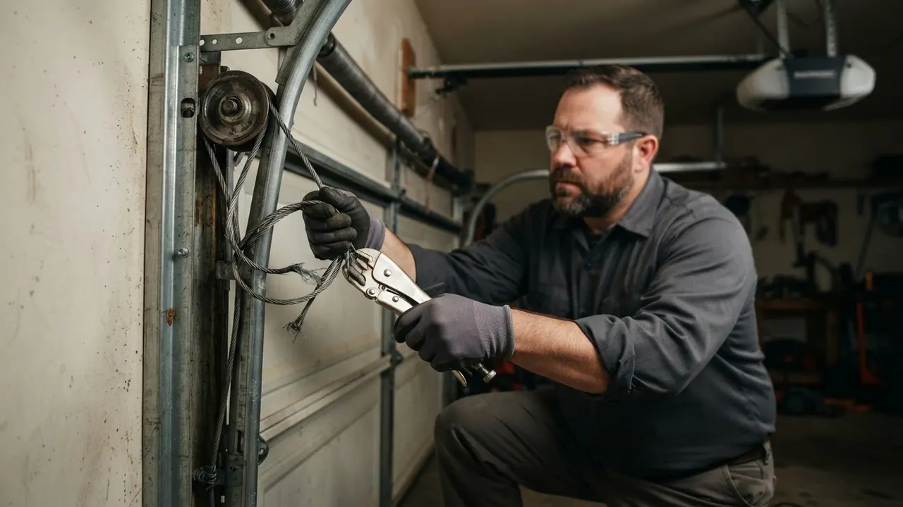
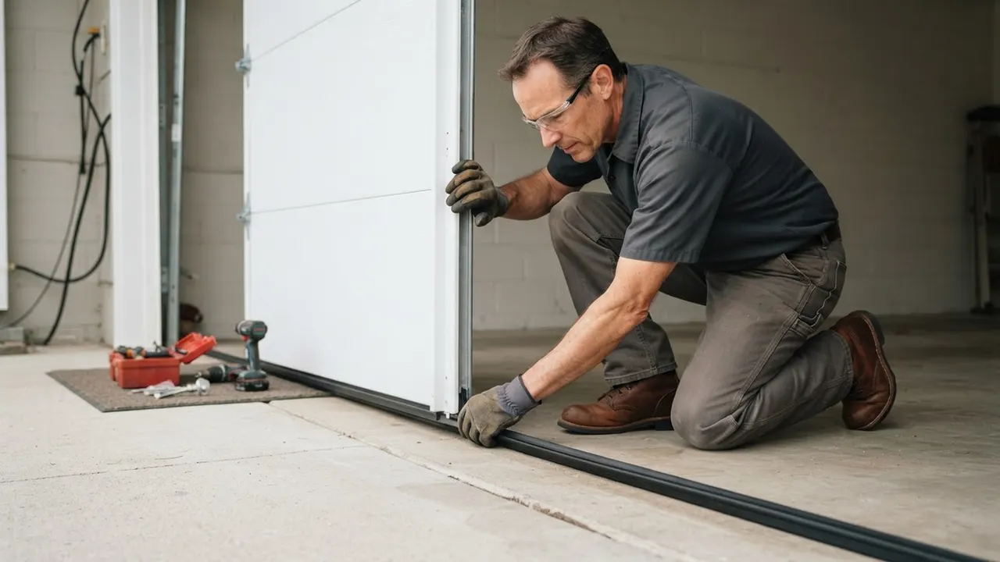

Garage Door Maintenance & Tune-Up
Garage Door Maintenance Wilmington DE keeps your door moving
Garage Door Maintenance Wilmington DE is the once-a-year service that keeps your door quiet, balanced and safe. We tighten the hardware, lubricate the moving parts, test the safety reverse and catch worn torsion springs before they snap on a cold Delaware morning. If your door shudders, squeals or reverses for no reason, a garage door tune-up in Wilmington DE fixes it in one visit.
Service overview
What Garage Door Maintenance Wilmington DE Actually Covers
Garage Door Maintenance Wilmington DE is a scheduled service that inspects, lubricates, adjusts and balances every moving part of your door and opener. A technician checks the torsion springs for stretch and rust, looks at the galvanized steel cables for fraying, and tests each nylon roller and hinge for flat spots. We torque the track brackets, level the door, set the opener travel limits and confirm the safety reverse trips within two inches of the floor, the way UL 325 requires.
Wilmington doors take a beating. Summer humidity swells wooden jambs in the older blocks around Trinity Vicinity, winter road salt pits steel rollers, and a door that sat unused for a month can freeze its hinges solid. That is why we recommend annual garage door maintenance Wilmington homeowners can schedule before the first hard freeze. If you have been searching for garage door maintenance Wilmington DE near me, we cover every ZIP from 19801 through 19809.

Practical benefits
Why Wilmington Homeowners Book a Tune-Up
A tune-up costs far less than the repair it prevents. Here is what a yearly visit actually buys you.
Catch Springs Before They Snap
Torsion springs lose tension slowly, and a door that feels heavy is the first warning. We measure the coils and cycle count, so you replace a spring on a scheduled visit instead of paying for an emergency call at 7 a.m. with a car trapped inside.
Quieter Door, Less Vibration
Most garage door noise comes from dry rollers and loose hinges, not the opener. We clean and lubricate the rollers, hinges and track, then tighten the bracket bolts. Customers in Trolley Square routinely tell us the door drops from a shudder to a whisper after one visit.
Lower Energy Bills
A door that does not seal lets cold air pour into the garage and the rooms above it. We check the bottom seal and weather stripping, replace cracked rubber, and confirm the door meets the floor evenly. That is a real difference on a January heating bill.
Opener Runs Cooler
A binding door forces the opener motor to work harder, which burns out gears and strips the drive belt early. Balancing the door takes the strain off the motor. We also test the safety sensors and remote range, so a LiftMaster or Genie unit lasts its full service life.
How service works
What Happens During a Tune-Up
A standard visit runs 60 to 90 minutes for a single door. Here is the sequence our technicians follow on every call.
STEP 01
Walk-Through and Test
We start by running the door up and down while you watch, noting noise, hesitation and balance. The technician checks the opener's safety reverse and the photo-eye sensors, then measures the door's travel and stopping points. You get a plain answer on what is worn and what is fine.
Tools and methods
Tools and Methods We Use
Winding bars
Solid steel bars used to safely adjust and release torsion spring tension. We never adjust springs without them, because a slipped spring under load can cause serious injury.
Socket wrench set and screwdriver set
Used to torque track brackets, hinge bolts and roller stems to spec. Loose hardware is one of the most common causes of a door drifting off track.
C-clamps and vise grips
We clamp the track and torsion bar to hold the door in place while we work on springs or cables. This keeps the door from moving unexpectedly during a repair.
Tape measure and level
Used to check track plumb, door square and spring length. A door that is out of square by a quarter inch will bind and wear its rollers unevenly.
Power drill
Speeds up bracket, hinge and opener mounting work. We use it for pilot holes and fastener driving, then finish torque by hand so nothing is over-tightened.
Rubber mallet
Used to seat rollers, tap track sections into alignment and free frozen hinges without damaging the door panels or the finish.
Safety glasses
Worn by every technician on every visit. Spring and cable work involves stored energy, and eye protection is non-negotiable under our OSHA safety compliance policy.
UL 325 safety reverse testing
Every tune-up ends with a safety reverse test to the UL 325 standard. We place a test object in the door's path and confirm the door reverses within two inches of contact. This is the single most important safety check on any automatic door.
ANSI/DASMA 102 inspection
We follow the ANSI/DASMA 102 guidance for sectional door inspection, which covers springs, cables, drums, tracks and hardware. It gives us a consistent checklist so nothing gets missed between visits.
Spring cycle-count assessment
Standard torsion springs are rated for about 10,000 cycles, and a door that opens and closes four times a day hits that in roughly seven years. We estimate your cycle count and flag springs that are near the end of their rated life.
Door balance test
We disconnect the opener and lift the door by hand to the halfway point. A balanced door holds there with about 10 pounds of lift. If it drifts, we adjust the spring tension before we reconnect the opener.
Where this service fits
When to Book a Tune-Up
You are heading into your first Wilmington winter with a door that has never been serviced.
We run a full tune-up before the first hard freeze: lubricate the springs and hinges, check the bottom seal for cracks, test the safety reverse and confirm the opener's force settings are correct for cold weather. The door runs smoothly through the winter instead of freezing up or snapping a spring on the coldest morning of the year.
You just bought a home in The Highlands or Wawaset Park and do not know the door's service history.
We inspect the full system, document the spring type and cycle count, check the opener age and test every safety feature. You get a written baseline report for the door. You know exactly what you own, what is near the end of its life, and what to budget for over the next year.
Your door has gotten noticeably louder over the past few months.
We identify the source of the noise, whether it is dry rollers, worn hinges, a loose track or a failing bearing, and fix it during the visit. We also lubricate every moving part. A quiet door, less vibration through the house, and a longer life for the opener motor.
You rent out a property in Southbridge or Little Italy and want to avoid tenant repair calls.
We set up an annual maintenance visit on a schedule that works for you and your tenant. We send a written report after each visit and flag anything that needs attention before it becomes an emergency. Fewer after-hours calls, a door that stays reliable, and a documented service record for the property.
Local execution
How Tune-Ups Run in Wilmington
Wilmington sits between the Brandywine and Christina rivers, and that humidity shows up in garage doors. Wooden jambs in older neighborhoods swell in summer and shrink in winter, which pulls the track out of plumb over time. Road salt from I-95 and Route 202 pits steel rollers and rusts hinges faster than in inland areas. We schedule most tune-ups in October and November, before the first freeze, because a spring that is already stressed is far more likely to snap on a 20-degree morning. For customers who want a spring tune-up in the middle of summer, we also run a lighter mid-year check that focuses on lubrication and sensor alignment. If you are looking for annual garage door service Wilmington DE homeowners can count on, we cover every ZIP from 19801 through 19809 and most of New Castle County.
Wawaset Park
Many homes here have original wooden carriage-house doors. We check for rot at the bottom rail and adjust the hardware gently, since older wood moves with the seasons.
Riverfront
River humidity and salt air from the Christina speed up corrosion on steel rollers and hinges. We use corrosion-resistant lubricant and check the bottom seal more often on doors near the water.
Southbridge
A mix of older single-bay garages and newer builds. We see a lot of extension spring systems here, which need a different inspection routine than torsion setups.
Trolley Square
Tight alleys and narrow driveways mean the door gets used constantly. We often recommend a twice-a-year lubrication schedule for doors in this area because of the daily cycle count.
Little Italy
Compact garages with limited clearance. We check the track brackets carefully here, since a door that drifts even a quarter inch can hit the jamb on the way up.
Freeze-thaw cycles from December through March
Metal contracts and springs lose tension, which is when most broken-spring calls come in. A fall tune-up catches a stressed spring before the first hard freeze.
Summer humidity near the rivers
Swollen wooden jambs push the track out of alignment and rust forms on bare steel. We lubricate with a humidity-resistant product and check the track plumb on every visit.
Road salt from I-95 and Route 202
Salt spray from cars pits steel rollers and rusts hinges. We inspect these parts closely on homes near the highway and replace rollers with sealed-bearing units when needed.
Older housing stock in the city core
Original wooden doors and older openers need more frequent adjustment. We set a service interval that matches the age of the door, not a one-size-fits-all schedule.
Problems we solve
Problems a Tune-Up Catches Early
Most garage door failures start small and give warning signs for weeks. A yearly visit catches them while they are still cheap to fix.
Door shudders or shakes on the way up
We replace flat-spotted rollers, tighten the hinge and bracket hardware and realign the track. The door runs smooth again, and the opener stops working overtime. Most of these fixes happen during the tune-up itself. A shaking door usually means worn rollers, loose hinges or a track out of alignment. Left alone, it wears the opener gears and can throw the door off track entirely.
Loud squealing or grinding noise
We clean and lubricate the torsion springs, hinges, rollers and bearing plates with garage-door-rated lubricant. If a bearing or bushing is grinding, we replace it. Customers often tell us the door is quieter than it has been in years. Dry springs, hinges and rollers are the usual cause. The noise is annoying, but the real cost is accelerated wear that shortens the life of every moving part on the door.
Door reverses for no reason
We realign and clean the photo-eye sensors, test the safety reverse, and check the opener's force settings. If the door is binding, we balance it. You get a door that closes reliably every time. A door that will not stay closed is usually a sensor problem, but it can also be a sign of binding or a failing opener. Either way, it leaves your garage open and your tools exposed.
Door feels heavy when lifted by hand
We measure the spring tension and cycle count, then adjust or replace the springs in matched pairs. Once the door is balanced, the opener only has to lift about 10 pounds, which is what it was designed for. A heavy door means the springs have lost tension or one has already broken. Running the opener on a heavy door burns out the motor and can snap a cable.


A practical standard for every visit.
Clear planningPrepared arrivalsCareful workLocal follow-through
Experience in the details
16 Years Working on Wilmington Doors
Delaware Express Garage Door Service has been repairing and tuning garage doors since 2010. That is 16 years of springs, cables, openers and tracks across New Castle County. Our technicians work on every major brand, including LiftMaster, Chamberlain, Genie, Craftsman, Clopay, Amarr, Wayne Dalton, Linear, Marantec and Sommer. We follow DASMA and ANSI/DASMA 102 guidance on spring and hardware inspection, and we test every safety reverse to the UL 325 standard. Whether it is a 1920s carriage house in Wawaset Park or a new build in Riverfront, we have tuned the door on that street before.

Where we work
One local team. A lot of ground covered.
Downtown WilmingtonRiverfrontThe HighlandsTrolley SquareForty AcresBaynard VillageWawaset ParkCool SpringTrinity VicinityBrowntownLittle ItalyUnion Park Gardens
Check my address Notes from local customers
What Wilmington Customers Say
Our door had been screeching for months and I figured the opener was dying. The technician lubed the rollers and hinges, tightened the track and rebalanced the door in about an hour. It is quieter than it has been in years and he told me the opener was fine. Honest work, fair price.
I booked a tune-up before winter and they found a torsion spring that was about to go. They showed me the wear and quoted the replacement on the spot. I got it done that day instead of waiting for it to snap with my car inside. Worth every dollar.
We manage several rental units and use Delaware Express for annual maintenance on all the garage doors. They show up when scheduled, send a written report on each door, and flag anything that needs attention before it becomes a tenant complaint. Reliable crew.
Once a year is the standard for a residential door, and twice a year if the door gets heavy daily use or your home sits near the river where humidity swings hard. A door that has never been serviced in five years should be tuned before winter. Spring and fall are the two best windows, since both seasons put stress on springs and seals.
Most single-door tune-ups in the Wilmington area run $95 to $180 in 2026, depending on door size and how much adjustment is needed. If we find a worn part during the visit, we quote it before doing the work. A tune-up plus a roller or seal replacement usually lands under $300, which is far less than an emergency spring repair.
A full visit includes lubrication of springs, hinges and rollers, tightening of all track and hinge hardware, a balance test, opener travel and force adjustment, safety reverse testing to UL 325, and a check of cables, drums and the bottom seal. You also get a written report on anything that needs attention in the next year.
Delaware Express Garage Door Service has been tuning doors in Wilmington since 2010. We cover every neighborhood from Downtown and Trolley Square to Southbridge and North Brandywine, and we can usually schedule a same-day garage door tune-up Wilmington DE homeowners can fit around work. Call (302) 556-5080 to book.
Keep exploring
Related Garage Door Services
Your next step is waiting
Book Your Garage Door Maintenance Wilmington DE Visit
One visit a year keeps your door quiet, balanced and safe, and it costs far less than an emergency repair. We are licensed, insured and have been tuning Wilmington doors since 2010. Call today and we will get you on the schedule, often the same day.
Start with the basics
Call For Garage Door Service
Call (302) 556-5080 and tell us what your door is doing. We answer during business hours and run emergency calls after hours. Most days we can get a tech to you the same day, and we will give you a window, not a maybe.